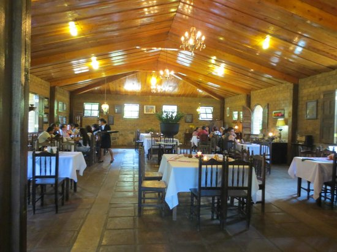
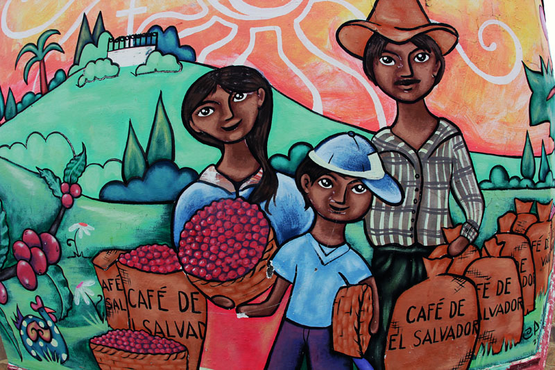
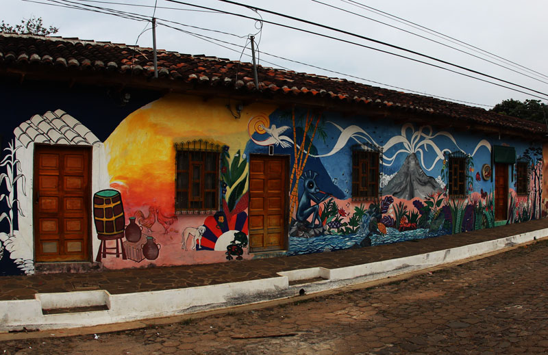
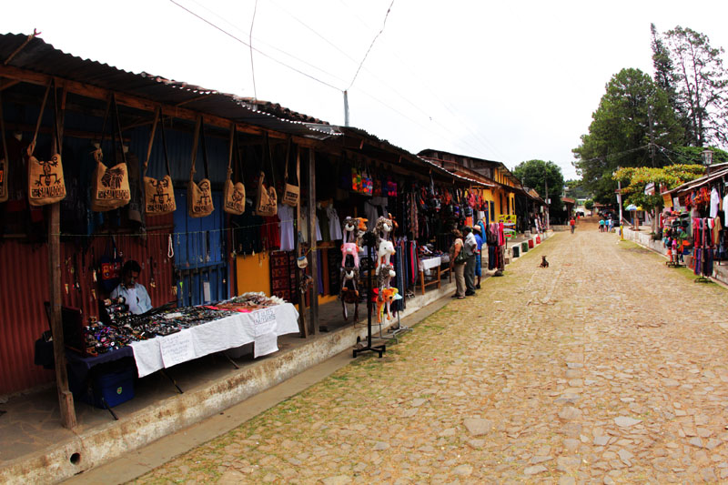
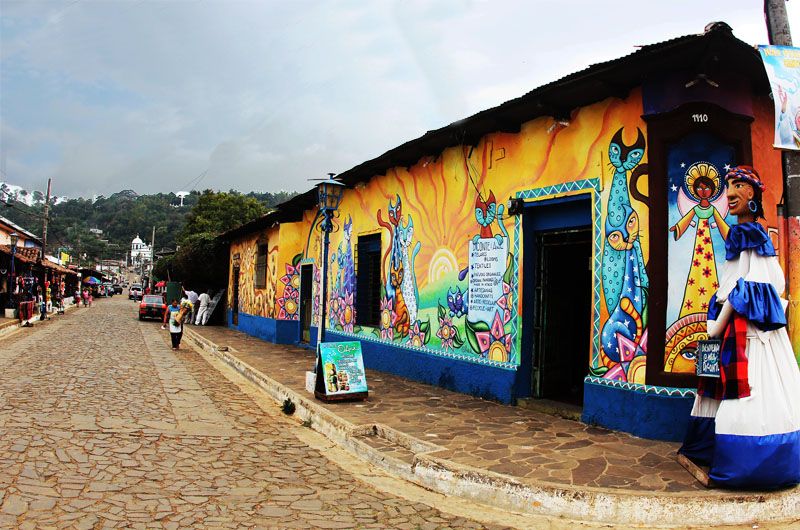
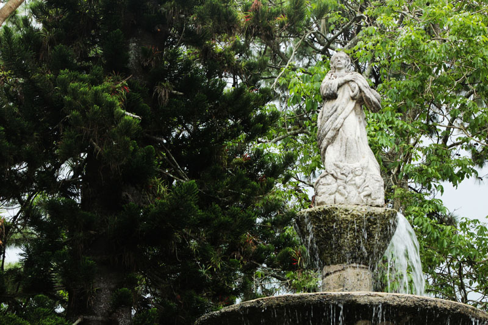
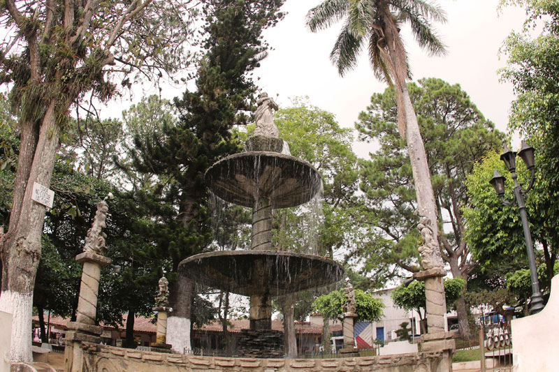
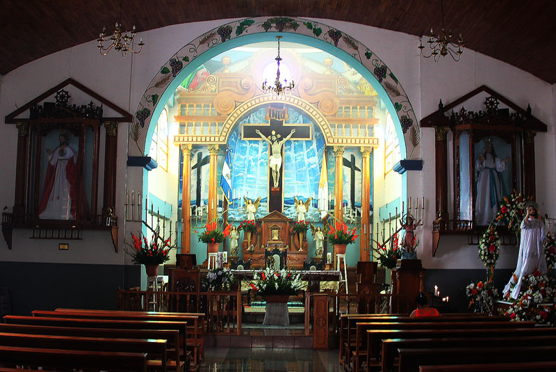
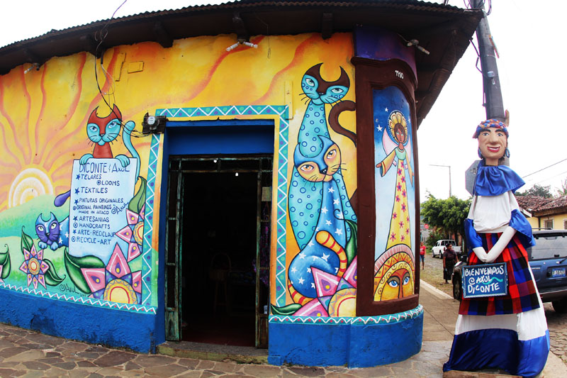

Galeria de imagenes
Aqui podra visualizar imagenes del recorrido, le mostraremos las maravillas que se podra encontrar en la ruta de las flores. Acontinuacion se le mostraran las imagenes de los lugares mas memorables
Texto de prueba
Mural #1 (Cafetaleras)
Casas llenas de murales
Ventas de artesanias
 Mural #2 (Vistas generales)
Mural #2 (Vistas generales)Tienda tradicional de Ataco
Estatua de la Virgen de la Inmaculada (Parque Concepcion de Ataco)
Fuente en el parque Concepcion de Ataco
Parroquia Cristo Negro
Tienda tradicional de Ataco (Frente)